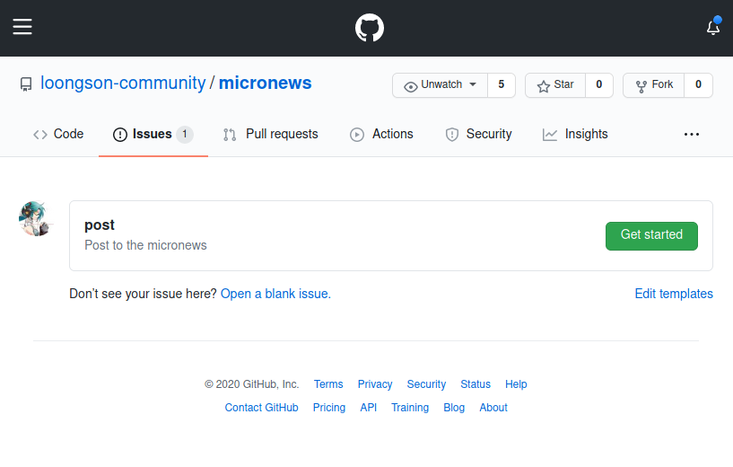
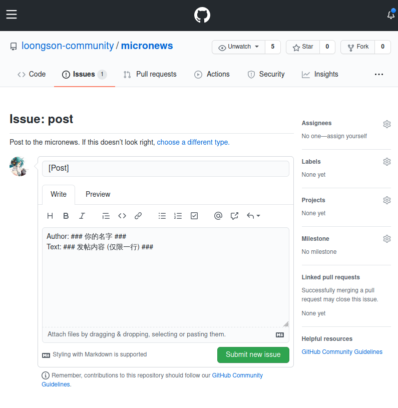
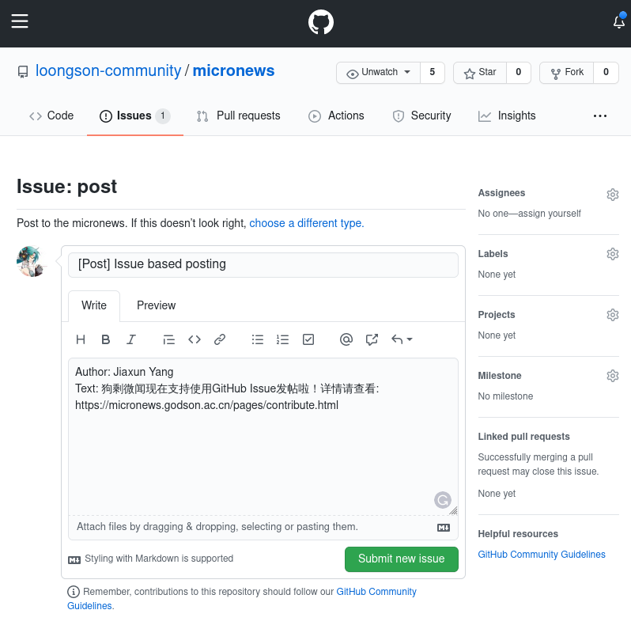
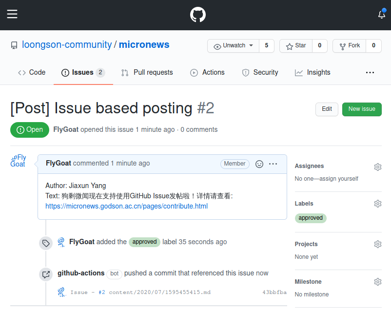

首先进入狗剩微文的 Issues 界面，单击右上角 New Issue，会进入Issue模板选择界面。

点击post模板旁的Get Started，会进入下一步撰写环节。

取一个合适的Issue遍体，并且在撰写框中填入作者与内容。
注意，请保留行开头的Author:与Text：，且内容必须为单行。

如图，撰写完成之后请点击右下角Submit New Issue。接下来你的帖子就会被提交并等待Publicity组审核。

审核完成后，Publicity组员会为你的Issue加上approved lable，这时，基于GitHub Action的自动化程序会将你的帖子正式发布出去。
W.I.P.